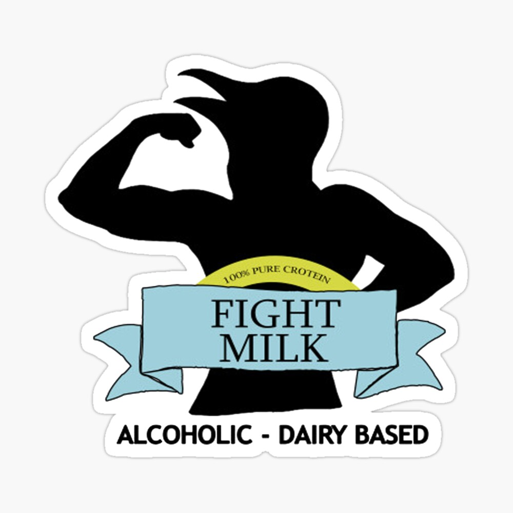
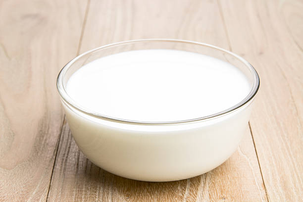

Fight Milk
So you can soar as high as a crow!
Serves 4


Description
As used by UFC fighters, this dairy-based alcoholic sports
supplement has been developed by body guards for body guards (and you, you jabroni!).
By incoporating the raw protein of crows eggs and the revitalising power of abani berries as sold by Invigaron,
Fight Milk gives you the strength and vigor to take on the challenges faced by the modern man.
Ingredients
- Half gallon milk
- 4 crow eggs
- Half pint grain alcohol (preferable bottom shelf vodka)
- 15 abani berries
Method
- Allow the milk to reach room temperature and rest for 4 hours
- Whisk up the crows eggs; do not worry if any shell is in the mix
- Add the grain alcohol to the egg mixture and fold in the abani berries
- Mix this into the resting milk
- Allow to mix by diffusion for 18 hours
- Serve at room temperature or will keep for 5 weeks